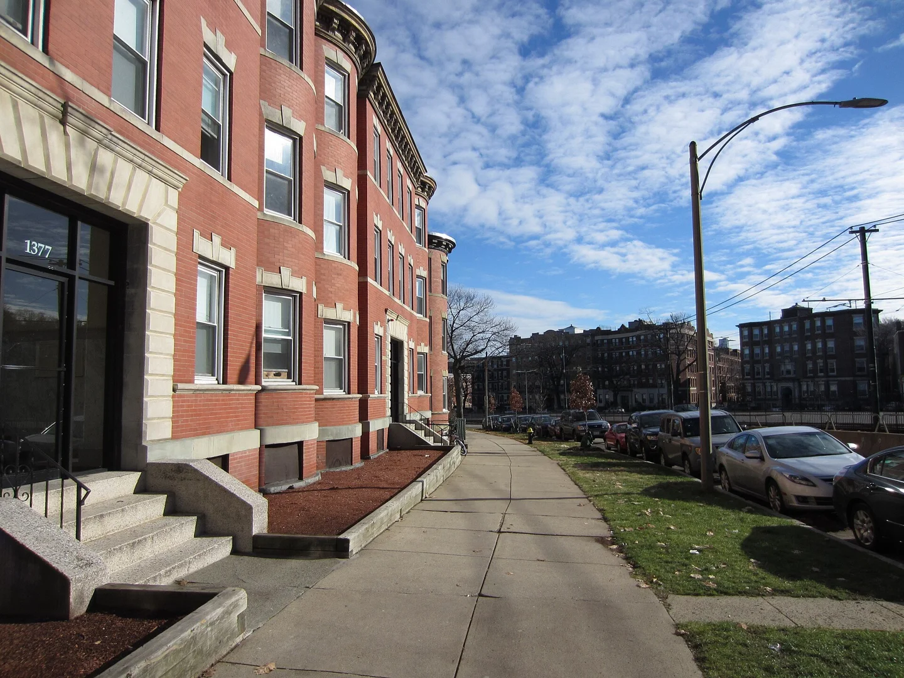

Commonwealth Avenue, Allston
Photo: 2014-12-14 · Sergey WereWolf

Resized and WebP encoded; displayed crops. Demo imagery, not a listing or evidence of condition. Resized/encoded versions remain under the original photo license; Brookline adaptations are CC BY-SA 4.0.